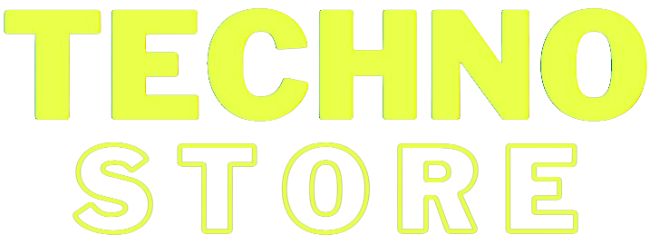
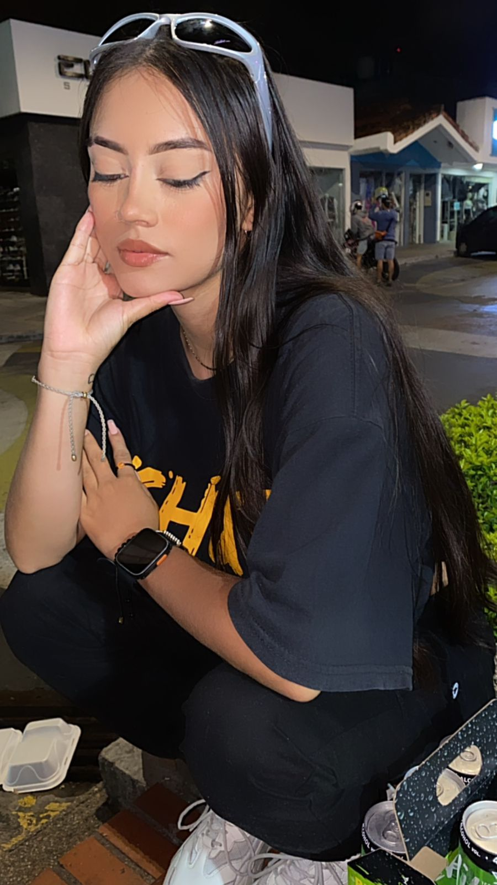

Nuestra página web surgió de la unión entre la moda y la pasión por la música techno y underground. Creada con amor y dedicación, nuestra plataforma digital es el resultado de un profundo aprecio por la cultura y el ritmo de los bits. Nos inspiramos en la energía vibrante de la escena underground para ofrecer un espacio donde convergen la moda y la música electrónica. En este espacio, se encuentran disponibles productos de cuatro marcas reconocidas en el mercado, todas ellas impregnadas con el espíritu único de este movimiento cultural.

Angeli Nicole Corredor Rodriguez
- Tecnico en programacion de software
- Tecnico en sistemas
- Camper (Campuslands)
- Estudiante Ingenieria de sistemas (UDI)